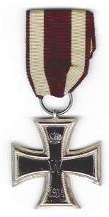

An Exceptional Selection
Iron Cross. Originally created in 1813 by King Fredrick III during Prussia's period of 'blood and iron' -- their struggle for survival against Napoleon. The award was to supersede all other bravery awards and only during times of war. The Iron Cross was re-issued during the Franco-Prussina war (1870-71). The 1914 Iron Cross was established in three classes: second class, first class, and grand cross. The second class and Grand Cross are suspended from a black and white ribbon, while the first class is a pinback badge worn on the left side of the uniform. The second class was usually only worn in dress uniform - at all other times it was represented by a ribbon looped through the second buttonhole of the tunic. There were approximately 218,000 awards of the first class during WWI, and over 5,000,000 of the second class. There were only
five recipients of the Grand Cross.

To Return to the main page